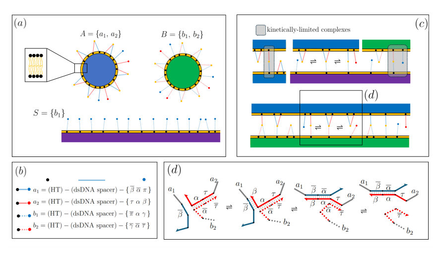
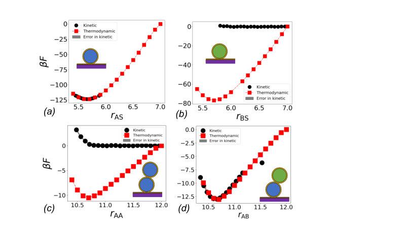


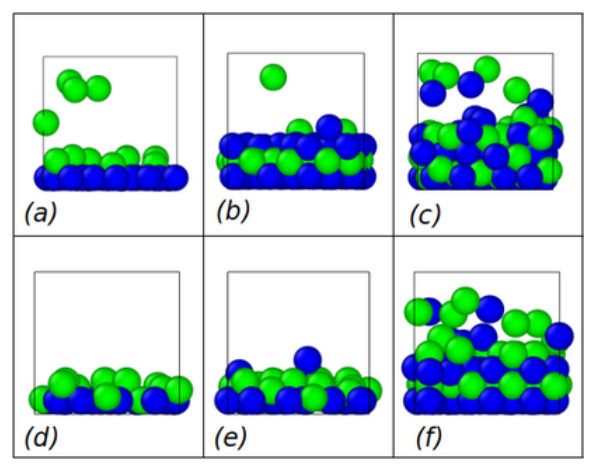
← Index · ← Previous · Next →
Authors: Yuki Ishihara, Ryota Nakano, Rinsuke Yamada, Takuya Nomoto, Priya R. Baral, Moritz M. Hirschmann, Kamini Gautam, Kamil K. Kolincio, Akiko Kikkawa, Seno Aji, Hiraku Saitoh, Masaaki Matsuda, Yasujiro Taguchi, Taka-hisa Arima, Yoshinori Tokura, Taro Nakajima, Max Hirschberger
Type: experiment · Category: strongly correlated electrons · PDF: https://arxiv.org/pdf/2605.01447v1
Analysis basis: full PDF text, analyzed in chunks
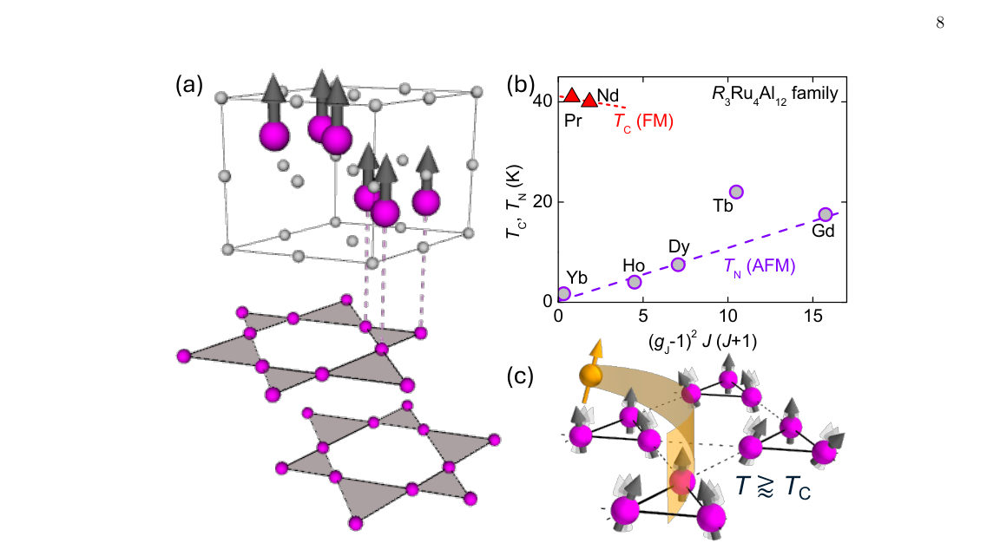
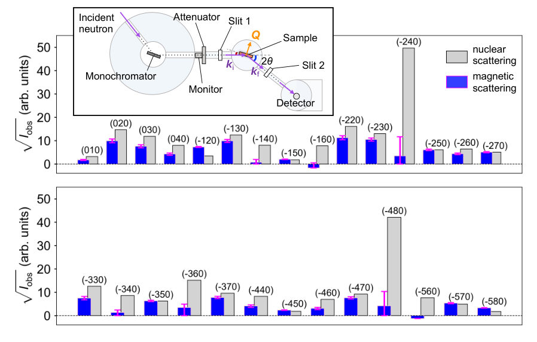
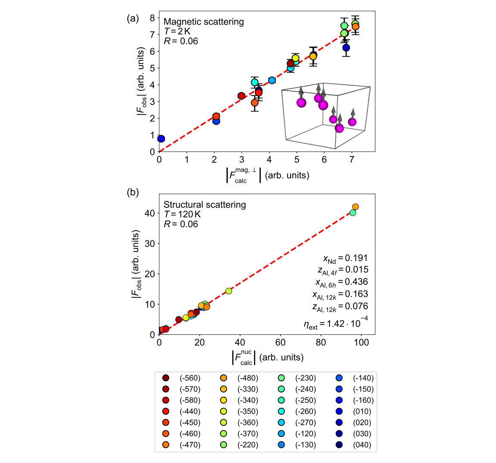
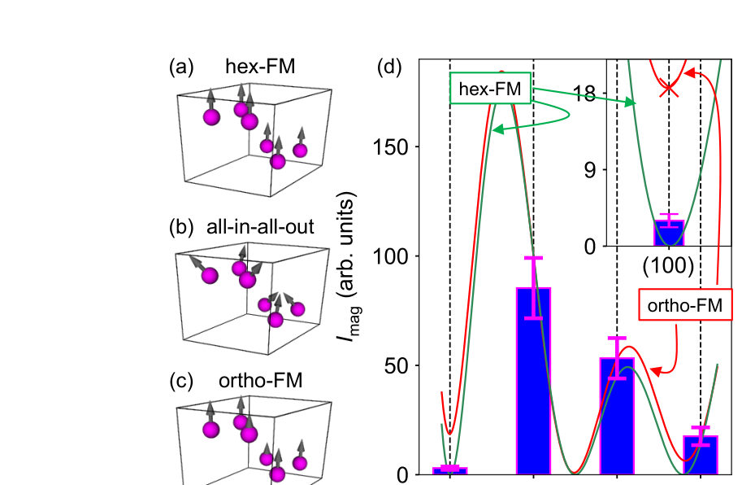
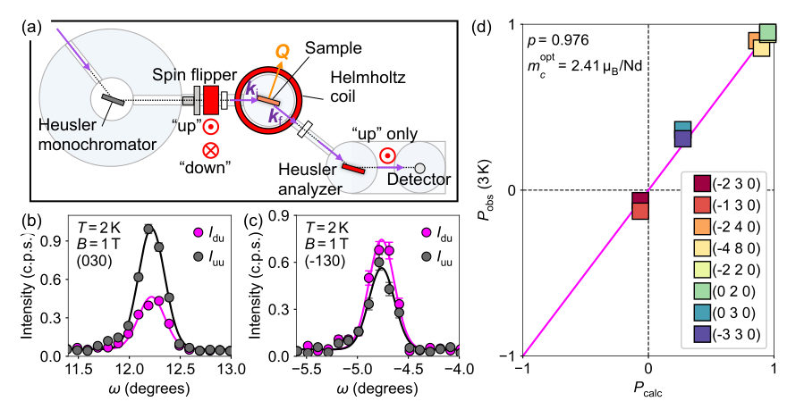
Summary. This paper uses neutron diffraction to prove that the kagome magnet Nd3Ru4Al12 has a collinear hexagonal ferromagnetic ground state rather than a previously proposed orthorhombic one. This finding provides a microscopic basis for the large Hall and Nernst responses observed near the transition temperature. The result resolves a long-standing discrepancy in the magnetic modeling of this material.
Why it may be interesting. not directly relevant
Main problem. Resolving the discrepancy regarding the magnetic ground state of the kagome lattice magnet Nd3Ru4Al12, specifically whether it follows a previously reported orthorhombic 'ortho-FM' state or a simpler hexagonal state.
Main result. The study identifies the ground state as a collinear hexagonal ferromagnetic (hex-FM) state with uniform moment length, effectively refuting the existence of the previously proposed orthorhombic state.
Method. Single-crystal neutron diffraction (unpolarized and polarized) was used to analyze magnetic structure factors and flipping ratios, supplemented by DFT calculations.
Model / system. The physical system is the kagome lattice magnet Nd3Ru4Al12, characterized by a staggered Nd sublattice and a hexagonal ferromagnetic (hex-FM) magnetic space group.
Key observables. Magnetic structure factors, magnetic intensity at (100) and (200) reflections, flipping ratio (P_obs), and ordered magnetic moment (mc).
Important parameters / regimes. Critical temperature Tc approx 41 K, magnetic moment mc approx 2.1-2.3 uB/Nd, and ordering vector Q = 0.
Assumptions / limitations. The analysis assumes the validity of the nuclear structure refinement to isolate the magnetic signal.
Figures summary. Fig 1: Kagome lattice and fluctuation mechanism; Fig 2: Unpolarized neutron scattering intensities; Fig 3: Comparison of observed vs calculated structure factors; Fig 4: Comparison of different magnetic models (hex-FM, AOAO, ortho-FM); Fig 5: Polarized neutron scattering geometry and flipping ratio results.
Paper structure. The paper introduces the scientific conflict, describes the experimental neutron diffraction setup, presents the structural refinement and symmetry analysis, compares competing magnetic models, and concludes with the implications for understanding thermal spin fluctuations.
We determine the magnetic ground state of the kagome lattice magnet Nd3Ru4Al12 by single-crystal neutron diffraction, supported by experiments with polarized neutrons. We identify this material as a collinear ferromagnet ("hex-FM") with uniform moment length mc = 2.1 μB/Nd and ordering vector Q = 0, in contrast to a previous, seminal report that proposed unequal moment lengths on two Nd sites, here called the "ortho-FM" state. Our analysis of the flipping ratio in polarized neutron scattering is consistent with the hex-FM state. The results provide a microscopic basis for understanding the large fluctuation-induced Hall and Nernst responses near TC = 41 K, as previously reported for Nd3Ru4Al12.
Authors: Akshaya Kumar Jena, Aashima Aashima, Pritam Kumar Jana, Bortolo Matteo Mognetti
Type: both · Category: statistical mechanics · PDF: https://arxiv.org/pdf/2605.01470v1
Analysis basis: full PDF text, analyzed in chunks



Summary. The paper presents a method to control the thickness and composition of colloidal layers by engineering the kinetics of DNA strand-displacement reactions. By using reaction kinetics to suppress unwanted equilibrium interactions, the researchers achieved a system that assembles into predictable, alternating layers. This provides a new way to program the morphology of complex soft-matter aggregates.
Why it may be interesting. not directly relevant
Main problem. Controlling the morphology, thickness, and compositional order of DNA-mediated colloidal aggregates by overcoming kinetic limitations and undesired equilibrium interactions.
Main result. Demonstrated that engineering reaction kinetics via toehold-mediated strand displacement can act as a digital filter to suppress undesired interactions, enabling the assembly of multi-layered crystals with alternating particle types.
Method. A hybrid simulation approach combining Brownian dynamics for particle positions and the Gillespie algorithm for reaction-diffusion dynamics, validated against theoretical free-energy calculations.
Model / system. A binary suspension of self-protected colloids (Types A and B) and a functionalized surface, where DNA oligomers facilitate reversible formation of two-strand and three-strand complexes.
Key observables. Number of layers in the aggregate, compositional order, number of DNA complexes (loops, bridges), and effective particle-surface/particle-particle interaction potentials.
Important parameters / regimes. Number of ligands per particle (N_L), chemical potential (mu), reaction timescale (tau_0), and hybridization free energies (delta G).
Assumptions / limitations. Neglects non-specific ligand-ligand interactions, assumes ligands are thin rods, and assumes lateral diffusion of tethered linkers is much faster than the self-assembly timescale.
Figures summary. Figure 1 illustrates the binary system and DNA design; Figure 2 compares kinetic vs. equilibrium interaction potentials; Figure 3 shows steady-state layer configurations and scaling with N_L and density; Figure 4 tracks complex dynamics over time.
Paper structure. The paper introduces the problem of kinetic limitations in DNA-assembly, presents a design for controlled layer deposition, derives the mathematical forces and free energy of the system, and uses reaction-diffusion simulations to validate the kinetic control mechanism.
We design a system with a binary suspension of colloids and a surface that triggers the self-assembly of crystallites with a finite thickness. The proposed design allows controlling the number of layers forming the aggregate and constrains the two types of particles to lie on different planes. These functionalities are achieved by decorating the colloids and the surface with multiple DNA oligomers featuring specific interactions. The surface triggers a chain of reactions between DNA oligomers, leading to localized self-assembly. Equilibrium principles control the thickness of the aggregates. Instead, compositional order is achieved by engineering the reaction kinetics between DNA oligomers in a way that limits interactions between colloids of the same type. We validate our design using theory and reaction-diffusion simulation algorithms, which capture the multibody nature of the interactions. This work demonstrates how engineering the kinetics provides a new avenue for controlling the morphology of aggregates assembled by DNA.
Authors: Anthony Gómez-Fonseca, Gretchen L. Matthews, Kirsten D. Morris, Tefjol Pllaha
Type: theory · Category: quantum information and computing · PDF: https://arxiv.org/pdf/2605.01942v1
Analysis basis: full PDF text, analyzed in chunks
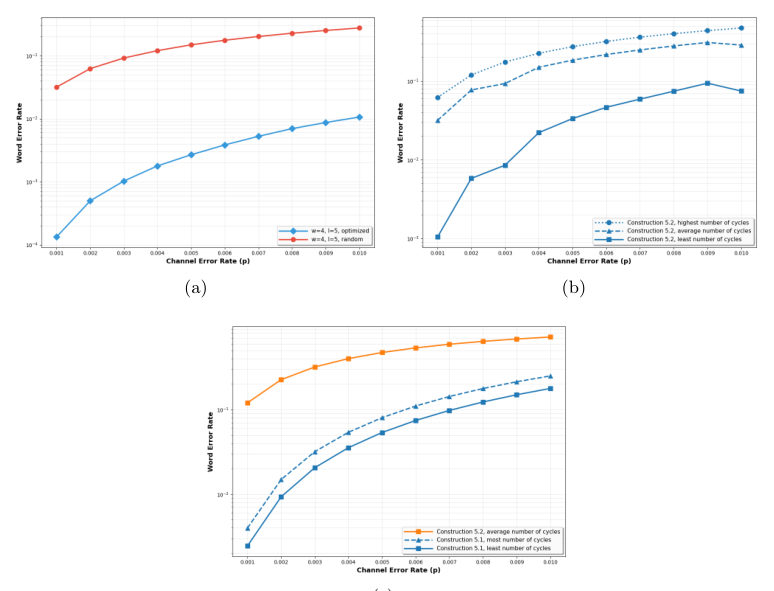
Summary. This paper provides a mathematical toolkit for constructing and optimizing QLDPC codes by using the algebraic properties of dyadic matrices to minimize structural defects like short cycles. By controlling these cycles, the authors show that decoding performance can be substantially improved even when the girth cannot be increased.
Why it may be interesting. not directly relevant
Main problem. Improving the performance of Quantum Low-Density Parity-Check (QLDPC) codes under iterative decoding by controlling short-cycle structures and harmful subgraphs like absorbing sets.
Main result. The authors developed an algebraic framework using dyadic and quasi-dyadic matrices to efficiently enumerate and control 4-, 6-, and 8-cycles, demonstrating that reducing cycle multiplicity can significantly improve decoding gains.
Method. The paper utilizes an algebraic framework of dyadic matrices (forming a commutative ring) and TBC (Tanner-Based Code) walk analysis to relate cycles in lifted Tanner graphs to walks in a protograph, alongside PEG-style construction algorithms.
Model / system. The study focuses on the CSS (Calderable-Shor-Steane) framework for quantum error correction, using dyadic and quasi-dyadic matrices as the basis for constructing parity-check matrices $H_X$ and $H_Z$ that satisfy the commutation constraint.
Key observables. Girth, short-cycle multiplicity (4-, 6-, and 8-cycles), permutation shift, and absorbing sets.
Important parameters / regimes. Lifting factor $N=2^\ell$, signature weight $\omega$, and the girth of the protograph.
Assumptions / limitations. The analysis assumes the order of the permutation shift $m$ is 1 and that the girth of the lifted graph is bounded by the properties of the underlying protograph.
Figures summary. Figures compare random versus optimized dyadic matrices to show decoding gains from 4-cycle reduction, and illustrate performance comparisons between different construction strategies and girth levels.
Paper structure. The paper introduces an algebraic framework for dyadic matrices, develops methods for cycle enumeration and construction algorithms (PEG-style), analyzes absorbing sets, and concludes with performance simulations and 6/8-cycle counting theorems.
Quantum low-density parity-check (QLDPC) codes offer a promising route to scalable fault-tolerant quantum computation, but their performance under iterative decoding is strongly influenced by short-cycle structure and other harmful subgraphs in the associated Tanner graphs. This paper develops an algebraic framework for constructing and analyzing (Q)LDPC codes from dyadic and quasi-dyadic matrices-translation-invariant $2^\ell \times 2^\ell$ binary matrices specified compactly by a signature row and forming a commutative ring with recursive block structure. Leveraging this structure, we relate cycles in lifted Tanner graphs to tailless backtrackless closed walks in the protograph and derive efficient, implementable methods to enumerate and control short cycles (notably $4$-, $6$-, and $8$-cycles). We introduce dyadic-aware PEG-style construction algorithms that use forbidden sets of shifts to maximize attainable girth when possible and otherwise minimize the multiplicity of the shortest cycles at the target girth. Motivated by error-floor phenomena, we further characterize and explicitly enumerate absorbing sets in key dyadic layout boundary cases, identifying configurations that induce abundant $(a,0)$-absorbing sets. Finally, we propose CSS-oriented dyadic constructions that satisfy commutation constraints by design and demonstrate via belief-propagation simulations that reducing short-cycle multiplicity can yield substantial decoding gains even when girth cannot be increased.
Authors: Gabor Vattay
Type: theory · Category: other · PDF: https://arxiv.org/pdf/2605.02621v1
Analysis basis: full PDF text, analyzed in chunks
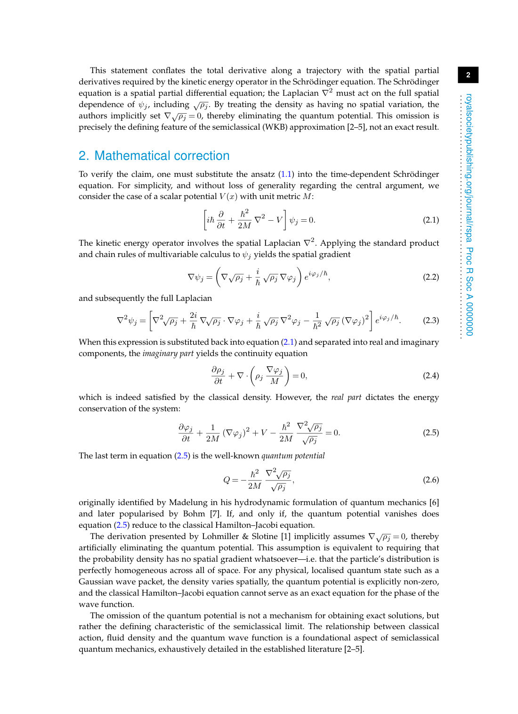
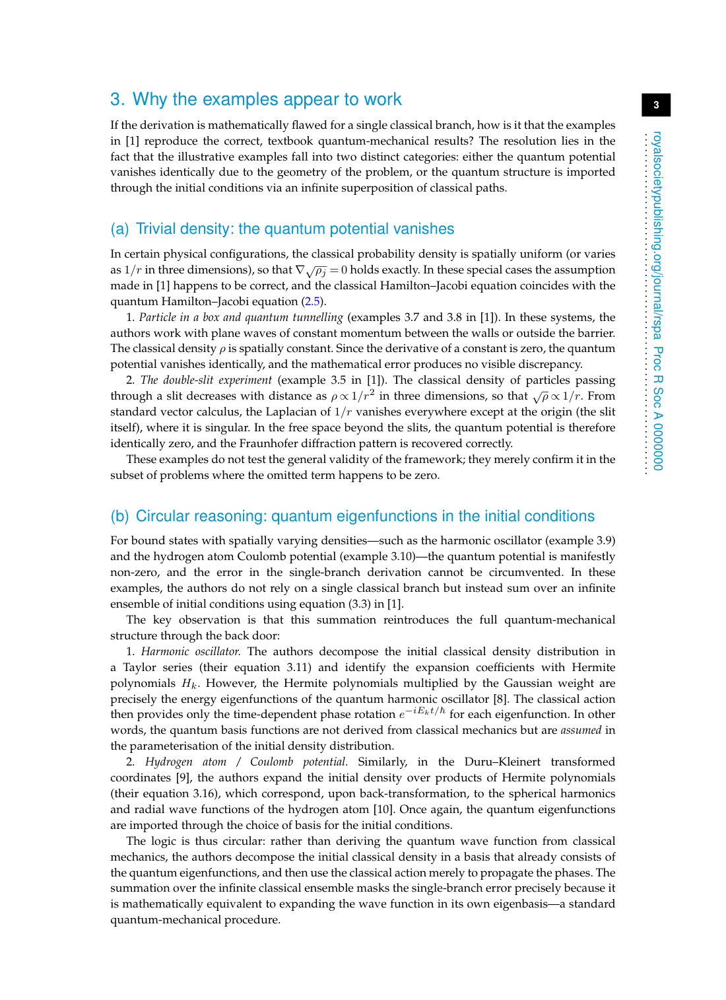
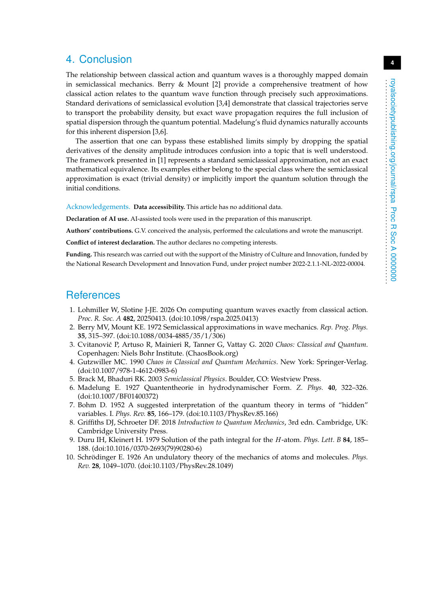
Summary. This paper is a formal rebuttal to a claim of an exact equivalence between classical and quantum dynamics. The author proves that the proposed method is actually a semiclassical approximation because it fails to account for the quantum potential term.
Why it may be interesting. not directly relevant
Main problem. The paper critiques a claim that the Schrödinger equation can be solved exactly using only classical action and density, arguing that the proposed method is actually a semiclassical approximation.
Main result. The author demonstrates that the original derivation neglects the spatial derivatives of the probability density, which omits the essential quantum potential term.
Method. The author uses mathematical derivation via the Madelung hydrodynamic formulation, applying the Laplacian to the wave function ansatz and comparing the resulting real and imaginary components to the standard Schrödinger equation.
Model / system. The discussion focuses on the time-dependent Schrödinger equation for a scalar potential V(x) within the Madelung hydrodynamic framework.
Key observables. Quantum potential (Q), probability density (rho), and classical action (phi).
Important parameters / regimes. The semiclassical (WKB) limit where the quantum potential is neglected.
Assumptions / limitations. The critique targets the assumption in the original paper that the spatial variation of the density amplitude is negligible.
Paper structure. The paper begins by identifying the error in the cited work, provides a mathematical derivation showing the omission of the quantum potential, and then analyzes specific examples (particle in a box, double-slit, etc.) to show how the error was masked.
A recent article by Lohmiller \& Slotine (Proc.\ R.\ Soc.\ A \textbf{482}: 20250413) claims that the Schrödinger equation can be solved exactly using only classical least action and classical fluid density, asserting that this formulation avoids semiclassical approximations. We show that their mathematical derivation contains a foundational error. By neglecting the spatial derivatives of the probability density amplitude, the authors inadvertently omit the quantum potential -- the term originally identified by Madelung and later emphasised by Bohm. Consequently, their proposed equivalence is not exact but rather constitutes the standard semiclassical approximation. We further demonstrate that each of the paper's illustrative examples either belongs to a class where the quantum potential vanishes identically due to the geometry of the problem, or recovers the correct quantum result by importing quantum eigenfunctions through the initial conditions, thereby concealing the error.
Authors: Abhishek Awasthi, Maximilian Hess, Salome Lomadze, Francesco Bär, Christian Biefel
Type: theory · Category: quantum information and computing · PDF: https://arxiv.org/pdf/2605.02465v1
Analysis basis: full PDF text, analyzed in chunks
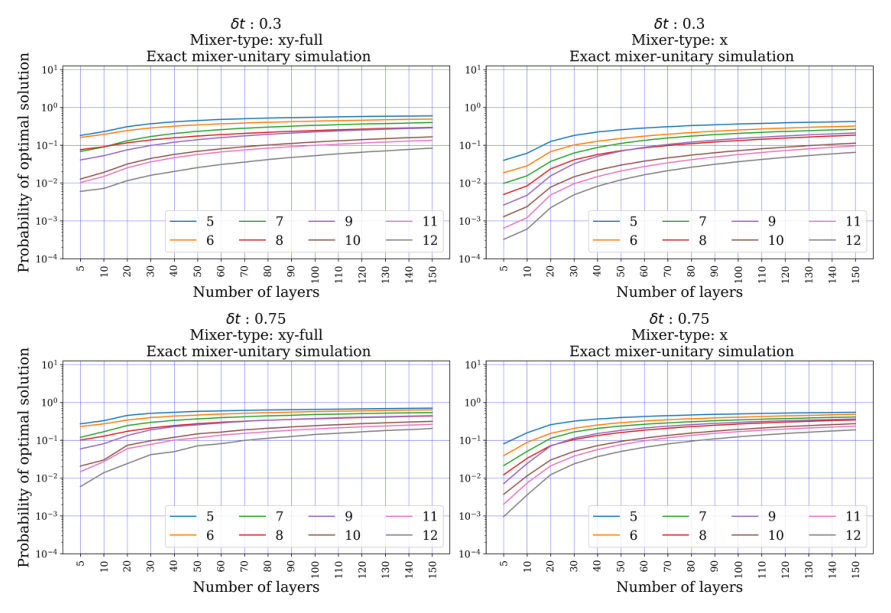
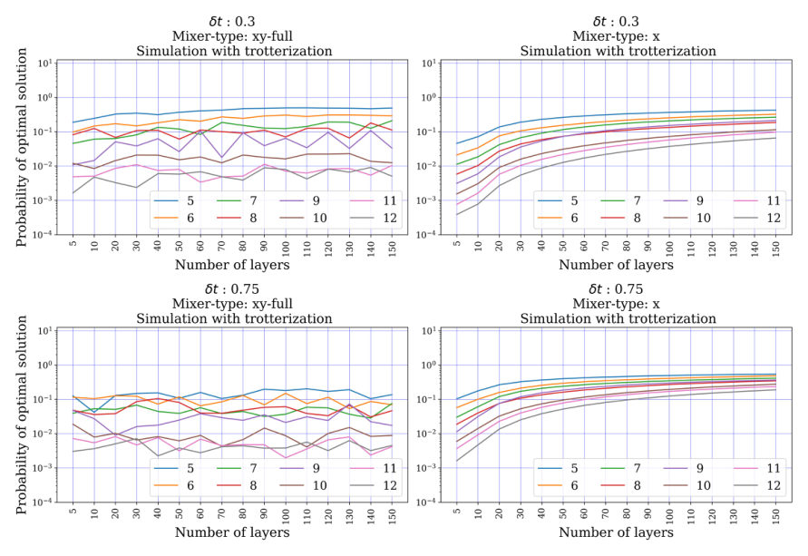
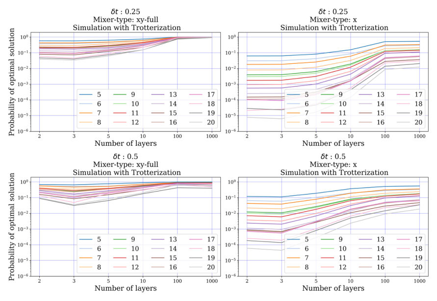
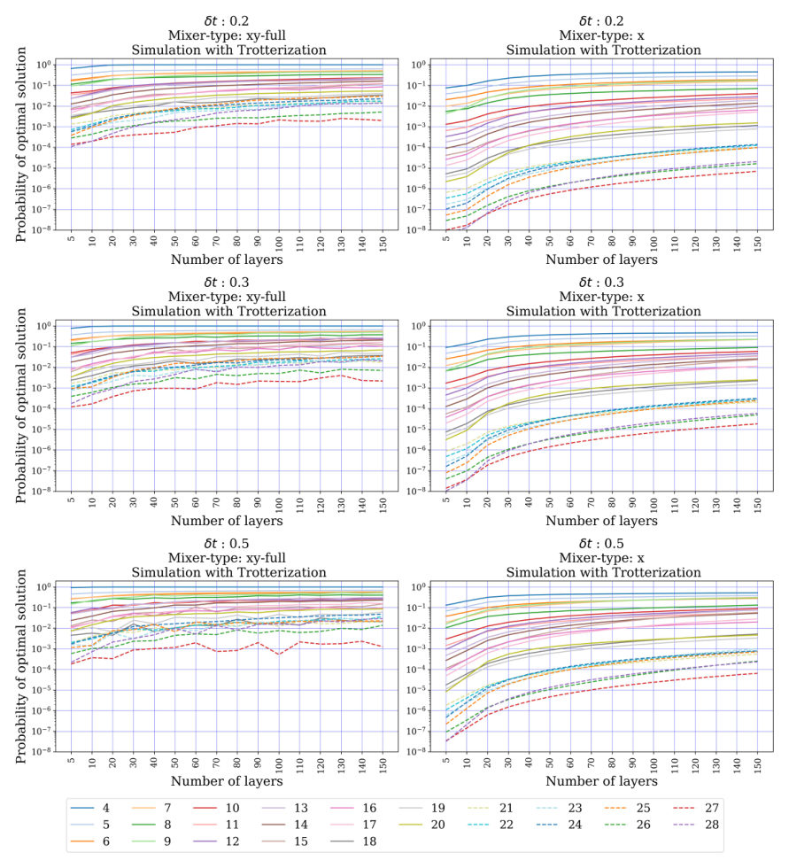
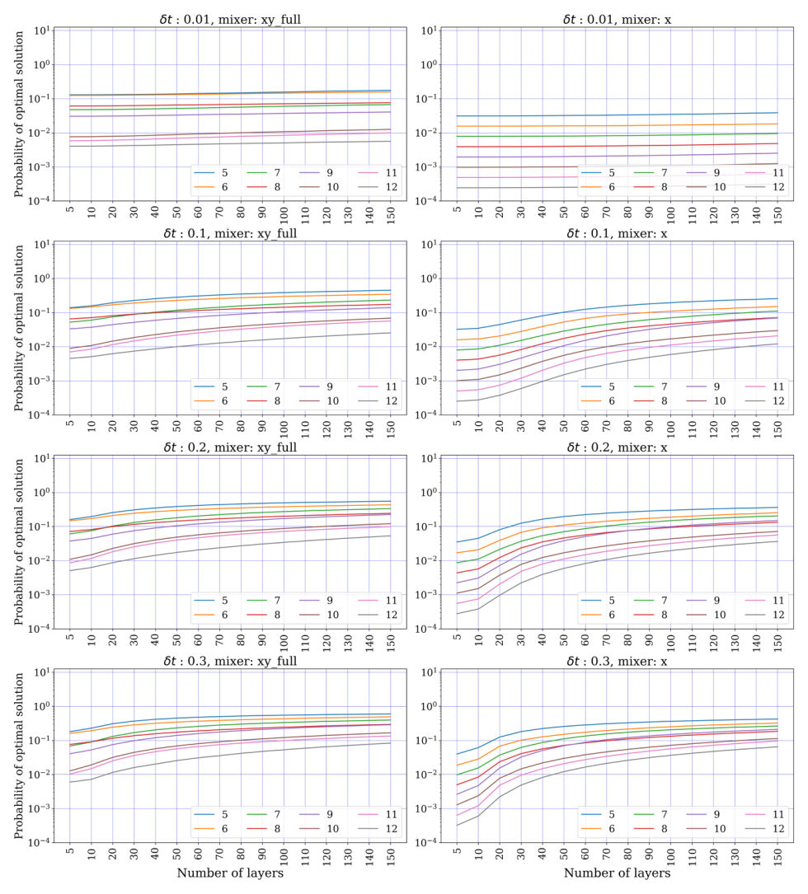
Summary. This paper demonstrates that the success of using constraint-preserving XY-mixers in quantum adiabatic evolution depends heavily on whether the constraints are global or local. It shows that while global constraints cause high Trotter errors that negate the benefits of XY-mixers, local constraints allow these mixers to significantly outperform standard methods.
Why it may be interesting. not directly relevant
Main problem. Investigating how Trotterization errors in XY-mixers affect the performance of Trotterized Adiabatic Evolution (TAE) for combinatorial optimization problems with equality constraints.
Main result. The effectiveness of XY-mixers depends on constraint locality: global constraints lead to significant Trotter errors that favor standard X-mixers, whereas local/disjoint constraints allow XY-mixers to outperform X-mixers by several orders of magnitude.
Method. Theoretical analysis of Trotter error scaling combined with numerical statevector simulations using Qiskit on various optimization problems (Portfolio, Paint Shop, Multi-Commodility Flow).
Model / system. Quantum optimization frameworks using Trotterized Adiabatic Evolution (TAE) with XY-mixers (which preserve Hamming weight) and standard Pauli-X mixers, applied to Ising Hamiltonians encoding $k$-hot constraints.
Key observables. Probability of measuring/sampling the optimal solution.
Important parameters / regimes. Trotter step size ($\delta t$), Trotter depth ($p$), constraint locality (global vs. local), and Hamming weight ($k$).
Assumptions / limitations. The analysis assumes linear, unweighted equality constraints and uses a first-order Suzuki-Trotter expansion for the implementation.
Figures summary. Figures compare success probabilities of XY vs. X mixers across different problem types (Portfolio, MCPS, MCFP) and varying Trotter step sizes and depths, highlighting the performance degradation in global vs. local constraint regimes.
Paper structure. The paper introduces the problem of constraint handling, provides a theoretical analysis of Trotter error scaling in XY-mixers, presents numerical validation using three distinct optimization problems, and concludes with a discussion on constraint locality as a design principle.
Constraint handling is a central challenge for quantum algorithms applied to combinatorial optimization. Standard penalty-based approaches increase problem size, distort energy landscapes, and often degrade performance. Constraint-preserving mixers, such as XY-mixers, restrict quantum evolution to feasible subspaces, but their implementation on gate-based hardware requires Trotterization, which introduces approximation errors. In this work, we systematically investigate the interplay between constraint-preserving XY-mixers and Trotterized Adiabatic Evolution (TAE). We present a theoretical analyses of the origin and scaling of Trotter errors in XY-mixers and show that the dominant contribution depends on the size and structure of individual constraints rather than on the total problem size. Our findings are validated through extensive numerical simulations on three representative problems: Portfolio Optimization, the Multi-Car Paint Shop problem, and a Multi-Commodity Flow problem. For problems with a single global equality constraint spanning all variables, Trotter errors significantly impair XY-mixer performance, making standard Pauli-X mixers more robust under realistic implementations. In contrast, for problems whose constraints decompose into multiple disjoint local blocks, XY-mixers outperform X-mixers by several orders of magnitude even under Trotterized evolution. These results identify constraint locality as the key criterion for the effective use of XY-mixers and demonstrate that TAE combined with structure-aware mixer design provides a robust and theoretically grounded alternative to variational quantum optimization methods. We further present a dedicated mixer Hamiltonian for TSP-like 2-way-1-hot constraints.
Authors: Ryota Nizuka, Ryutaroh Matsumoto
Type: theory · Category: quantum information and computing · PDF: https://arxiv.org/pdf/2605.02571v1
Analysis basis: full PDF text, analyzed in chunks
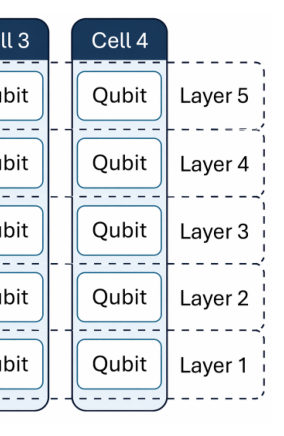
Summary. This paper introduces a new way to build error-correcting codes for stacked quantum memory architectures. By using Hermitian orthogonality instead of the traditional CSS construction, the authors remove previous geometric restrictions and significantly improve the error-correcting efficiency of the system.
Why it may be interesting. not directly relevant
Main problem. Existing quantum Gabidulin codes for stacked quantum memories are restricted to square-shaped layouts with an odd number of cells due to algebraic constraints in the CSS construction.
Main result. The authors propose a new construction method using Hermitian orthogonality that eliminates the odd-length restriction and approximately doubles the ratio of minimum rank distance to the number of physical qubits.
Method. The method combines the Hermitian self-orthogonality of classical Gabidulin codes with the Matsumoto-Uyematsu mapping to transform classical codes into symplectic self-orthogonal quantum stabilizer groups.
Model / system. The paper models a stacked quantum memory architecture consisting of multiple layers of qubits arranged in an m x n configuration, where errors are modeled as 'stacked errors' occurring during Clifford circuit execution.
Key observables. Code rate, minimum rank distance, and relative rank distance.
Important parameters / regimes. Number of physical qubits (N), number of logical qubits (K), minimum rank distance (d_R), and the extension degree of the finite field.
Assumptions / limitations. The error model focuses on Pauli errors in Clifford circuits, and the construction assumes the existence of a self-dual basis for the finite field extension.
Figures summary. Figure 1 provides a conceptual diagram of a stacked quantum memory with a specific layer and cell configuration.
Paper structure. The paper introduces the problem of existing code limitations, defines the stacked memory error model, proposes a new construction framework using Hermitian orthogonality, provides mathematical proofs for rank invariance and error bounds, and concludes with a comparative analysis and concrete construction example.
Stacked quantum memory is an architecture in which multiple layers of qubits are stacked. Quantum rank-metric codes are effective for error correction in stacked quantum memories. However, the previously proposed quantum Gabidulin codes based on the CSS construction had a problem: due to algebraic constraints, the applicable memory layouts were strictly limited to square shapes of odd length. In this paper, we first propose a framework for constructing quantum rank-metric codes from classical linear codes with symplectic self-orthogonality. Building upon this, we propose a new construction method for quantum Gabidulin codes by combining the Hermitian self-orthogonality of classical Gabidulin codes--utilizing the self-dual basis that exists when the extension degree of the finite field is even--with the quantum code construction method using Hermitian orthogonality by Matsumoto and Uyematsu. The proposed method succeeds in approximately doubling the ratio of the minimum rank distance to the number of physical qubits while maintaining the code rate. Furthermore, it eliminates the restriction of the conventional method that requires the number of cells and layers of the stacked memory to be odd, realizing the construction of quantum rank-metric codes applicable to memories with an even number of cells and layers. This construction improves the relative error correction capability of the stacked quantum memory architecture and increases the degree of freedom in design while preserving the code rate.
Authors: Kanishka Reddy
Type: both · Category: disordered systems and neural networks · PDF: https://arxiv.org/pdf/2605.01107v1
Analysis basis: full PDF text, analyzed in chunks

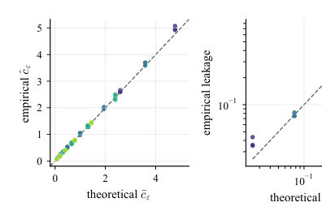
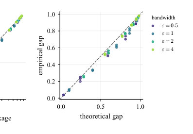
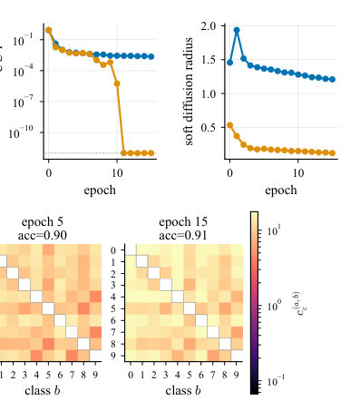
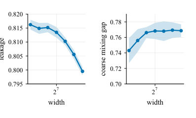
Summary. This paper replaces unstable, discrete graph metrics with a smooth diffusion operator to analyze the geometry of neural network representations. It proves that this operator-based approach is robust to noise and provides a closed-form mathematical link between feature-level distributions and class-level transport.
Why it may be interesting. not directly relevant
Main problem. The instability of discrete, graph-based geometric diagnostics (like k-NN graphs) in analyzing the evolution of neural network representations under small perturbations.
Main result. The development of a smooth diffusion operator framework that provides stable, Lipschitz-continuous geometric observables, and a theoretical 'Gaussian bridge' that predicts class-level transport based on Mahalanobis separations.
Method. The authors use Bakry-Emery Gamma-calculus applied to a Gaussian-kernel diffusion Markov operator and validate the framework through both a solvable Gaussian snapshot model and experiments on trained MNIST MLPs.
Model / system. The system consists of feature clouds (sets of vectors) produced by layers of a feedforward neural network, analyzed as snapshots of a diffusion process.
Key observables. Cross-class leakage, label-boundary energy, spectral gap, soft diffusion radius, and regularized Mahalanobis separation.
Important parameters / regimes. Diffusion bandwidth (epsilon), network width, and regularized class separation (c_epsilon).
Assumptions / limitations. The theoretical bridge assumes a balanced Gaussian snapshot model with shared class covariance; experimental bandwidth selection assumes a universal scale across different network widths.
Figures summary. Figure 1 validates the Gaussian bridge theory; Figure 2 shows the evolution of class geometry during training; Figure 3 demonstrates how increasing width affects class separation; Figure 4 compares the stability of operator-based metrics against discontinuous k-NN metrics.
Paper structure. The paper introduces the problem of graph instability, proposes the diffusion operator framework, derives analytical results using a Gaussian model, provides stability proofs, and concludes with empirical validation on MNIST and width-scaling experiments.
Neural networks transform data through learned representations whose geometry affects separation, contraction, and generalization. Recent work studies this geometry using discrete curvature on neighborhood graphs, suggesting Ricci-flow-like behavior across layers. We develop a smooth operator-theoretic alternative for feedforward representation snapshots. Each feature cloud induces a Gaussian-kernel diffusion Markov operator, and transport, spectral, label-boundary, and local-scale observables are derived from this single object via Bakry-Emery $Γ$-calculus. In a balanced Gaussian class-conditional snapshot model with shared covariance, the population operator has closed-form class affinities, leakage, and coarse spectra, all controlled by pairwise regularized Mahalanobis separations $c_\varepsilon^{(a,b)}$. We also prove that the resulting operator observables vary smoothly under feature perturbations, while hard neighborhood-graph diagnostics can change discontinuously. Synthetic experiments validate the closed-form Gaussian bridge, while learned MNIST experiments show that the same operator observables track training, width, and perturbation stability. Together, these results give a stable operator-geometric framework for analyzing feedforward representation geometry.
Authors: Maria Gragera Garces, Majid Haghparast
Type: theory · Category: quantum information and computing · PDF: https://arxiv.org/pdf/2605.02727v1
Analysis basis: full PDF text, analyzed in chunks
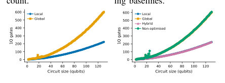
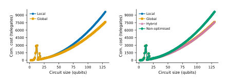
Summary. This paper evaluates how different ways of applying circuit optimization affect the performance of distributed quantum computers. It finds that the best strategy depends on whether the primary bottleneck is the number of gates, the amount of inter-QPU communication, or the time required to compile the circuit.
Why it may be interesting. not directly relevant
Main problem. Investigating how different quantum circuit optimization strategies (global, local, and hybrid) impact the trade-offs between computational costs and communication costs in distributed quantum computing architectures.
Main result. No single optimization strategy is universally superior; while global optimization minimizes computational resources and overhead, local optimization can reduce communication costs, and hybrid strategies can reduce both at the expense of significantly higher compilation time.
Method. The authors compared three compilation strategies (global, local, and hybrid) using the MQT Bench suite of 1,943 circuits, employing KaHyPar for balanced hypergraph partitioning and Qiskit's transpiler for optimization.
Model / system. A distributed quantum computing (DQC) architecture consisting of multiple interconnected Quantum Processing Units (QPUs) using a fully interconnected network model where cross-partition operations are implemented via teleportation-based telegates.
Key observables. Circuit depth, gate counts (1Q, 2Q, 3Q), number of induced non-local gates (communication cost), and classical compilation overhead/runtime.
Important parameters / regimes. Circuit size (ranging from 2 to 130 qubits), optimization levels, and the balance between computational, communication, and preprocessing costs.
Assumptions / limitations. Assumes a fully interconnected network topology, ignores path length effects, assumes all non-local gates have equal cost, and assumes no additional qubit overhead for communication.
Figures summary. Figure 1 compares computational resources (gate counts and depth) across strategies as circuit size increases; Figure 2 shows the advantage of global/hybrid encodings in reducing communication costs at larger scales; Table I provides compilation time statistics.
Paper structure. The paper introduces the problem of distributed circuit optimization, describes the network and optimization models, details the benchmarking methodology, presents comparative results for computational and communication costs, and concludes with a discussion on the trade-offs between the studied strategies.
As distributed quantum architectures begin to emerge, understanding the interaction between quantum circuit optimisation and circuit partitioning becomes increasingly important. In this work, we study how circuit optimisation influences distributed quantum workloads under system-level trade-offs. We compare three compilation strategies (global optimisation, local optimisation, and a hybrid approach) across a large benchmark suite of quantum algorithms. Using telegate-based partitioning, we evaluate the resulting distributed circuits in terms of gate counts, circuit depth, the number of induced non-local gates, and compilation overhead, thereby approximating computational, communication, and classical preprocessing costs. Our results show that circuit optimisation does not uniformly benefit distributed execution. Global optimisation minimises computational resources and achieves the lowest compilation overhead. Local optimisation can reduce communication cost even though it is not explicitly communication-aware. The hybrid strategy can simultaneously reduce both computational and communication overhead, but at the expense of significantly increased compilation time.
Authors: J. Ricardo de Sousa
Type: theory · Category: statistical mechanics · PDF: https://arxiv.org/pdf/2605.02736v1
Analysis basis: full PDF text, analyzed in chunks
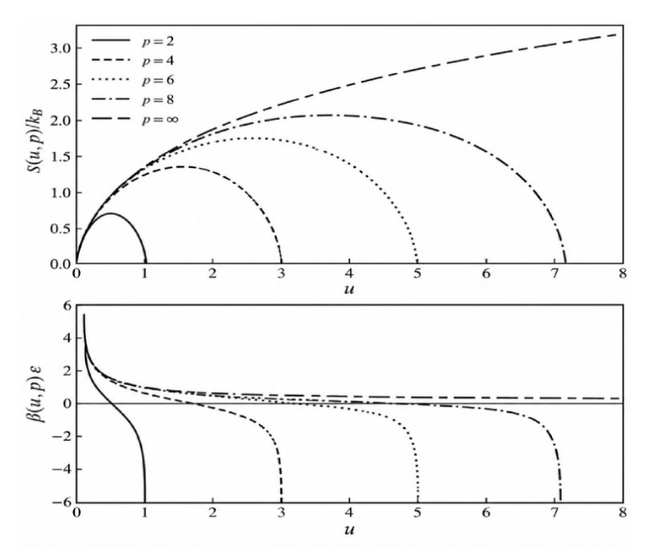
Summary. This paper provides a new, exact mathematical framework for the thermodynamics of any system with equally spaced energy levels. It shows how the existence of negative temperatures is a direct consequence of a bounded energy spectrum and how this feature vanishes as the number of levels becomes infinite.
Why it may be interesting. not directly relevant
Main problem. Developing a unified, exact microcanonical thermodynamic formulation for systems with a finite number of equally spaced energy levels for arbitrary p, and understanding the crossover between bounded and unbounded spectra.
Main result. The derivation of analytical expressions for entropy per particle and inverse temperature that recover known cases (p=2, 3, and infinity) and demonstrate that finite-p systems exhibit a negative-temperature branch that disappears as p approaches infinity.
Method. A generating function approach combined with Cauchy's formula and saddle-point analysis in the thermodynamic limit.
Model / system. A system of N noninteracting particles with p equally spaced energy levels {0, epsilon, ..., (p-1)epsilon}, applicable to spin-S Zeeman multiplets.
Key observables. Entropy per particle s(u, p), inverse temperature beta(u, p), and reduced energy u.
Important parameters / regimes. Number of levels p, reduced energy u, energy spacing epsilon, and the limit p -> infinity.
Assumptions / limitations. The derivation is specifically for the thermodynamic limit (N -> infinity) and assumes the microcanonical multiplicity can be represented via a generating function.
Figures summary. Figure 1 shows the dimensionless entropy per particle and dimensionless inverse temperature as functions of reduced energy u for various values of p, illustrating the shift in entropy maximum and the presence of negative temperature.
Paper structure. The paper introduces the problem of finite-level systems, presents the generating function and saddle-point derivation, provides the analytical results for entropy and temperature, validates the results against known p=2 and p=3 cases, and discusses the p -> infinity limit.
We present an exact microcanonical formulation, in the thermodynamic limit, for a system of $N$ noninteracting particles with $p$ equally spaced energy levels $\{0,ε,2ε,\ldots,(p-1)ε\}$. Writing the microcanonical multiplicity $Ω_p(E,N)$ as the coefficient of a generating function and evaluating the resulting representation by saddle-point analysis, we derive analytical expressions for the entropy per particle $s(u,p)$ and inverse temperature $β(u,p)$, with $u=E/(Nε)$ in the interval $[0,p-1]$. The formulation applies to arbitrary $p$ and recovers the known cases $p=2$, $p=3$, and $p\to\infty$. For finite $p$, the bounded spectrum implies an entropy maximum at $u_c=(p-1)/2$, where $β$ vanishes and changes sign. In the limit $p\to\infty$, the upper spectral bound is lost, the finite-energy entropy maximum disappears, and no negative-temperature branch remains. To our knowledge, this is the first general thermodynamic-limit microcanonical solution for arbitrary $p$. It therefore provides a unified framework for the thermodynamics of equispaced finite-level systems and their bounded-spectrum crossover with increasing $p$.
Authors: M. Barik, Q. Faure, F. Damay, J. P. Embs, S. Petit, P. Khuntia
Type: both · Category: strongly correlated electrons · PDF: https://arxiv.org/pdf/2605.02683v1
Analysis basis: full PDF text, analyzed in chunks
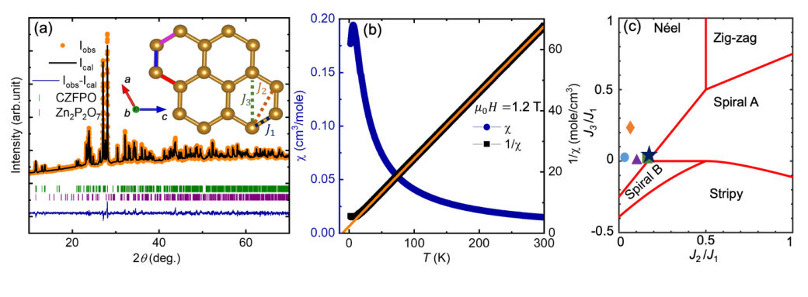
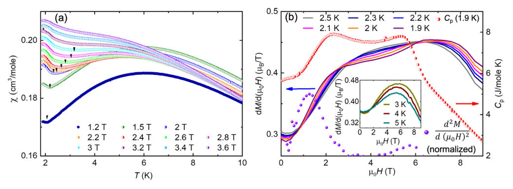
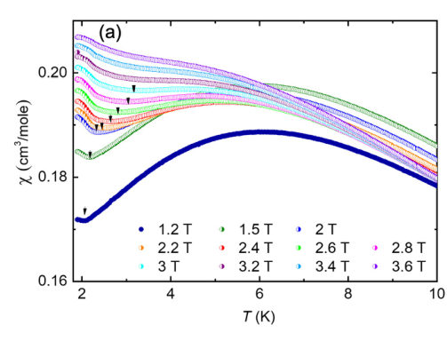
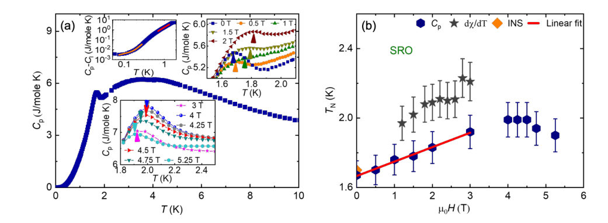
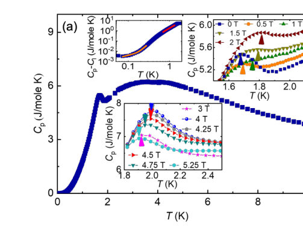
Summary. This paper investigates the magnetic properties of the frustrated honeycomb magnet CaZn2Fe(PO4)3. It demonstrates that competing exchange interactions place the system near a tricritical point and that an applied magnetic field induces an exotic spin-canted state with 2D correlations. This work provides a new platform for studying tunable magnetic phases in high-spin systems.
Why it may be interesting. The paper explores many-body dynamics and phase stability near a tricritical point, specifically looking at how external magnetic fields can tune the system between different magnetic regimes and dimensionality.
Main problem. Investigating exotic magnetism, field-induced phase transitions, and the interplay of competing exchange interactions and anisotropy in a high-spin (S=5/2) frustrated honeycomb antiferromagnet.
Main result. The study identifies a field-induced spin-canted state and places the material CaZn2Fe(PO4)3 near a mean-field tricritical point in the J1-J2-J3 phase diagram, exhibiting 2D correlations rather than standard 3D BEC.
Method. The researchers used a combination of neutron scattering (INS), thermodynamic measurements (specific heat, magnetization, susceptibility), and theoretical modeling via Linear Spin Wave Theory (LSWT) and spin-wave calculations.
Model / system. The system is CaZn2Fe(PO4)3 (CZFPO), a distorted honeycomb lattice antiferromagnet with S=5/2 Fe3+ ions, modeled by a J1-J2-J3 Heisenberg Hamiltonian with weak Ising-like anisotropy.
Key observables. Néel temperature (TN), Curie-Weiss temperature (theta_CW), magnetic susceptibility, specific heat, magnetization isotherms, and the magnetic excitation gap.
Important parameters / regimes. Exchange parameters (J1=2.08 K, J2=0.348 K, J3=0.023 K), anisotropy (D=0.069 K), and the transition temperature TN approx 1.67 K.
Assumptions / limitations. The analysis assumes the validity of Linear Spin Wave Theory for modeling excitations and uses a mean-field approach to locate the system in the phase diagram.
Figures summary. Figure 1(c) displays a phase diagram of J2/J1 vs J3/J1 for honeycomb antiferromagnets, positioning CZFPO relative to other known materials.
Paper structure. The paper begins with structural characterization, followed by magnetic and thermodynamic measurements, then moves to neutron scattering results, and concludes with theoretical modeling and phase diagram analysis.
Two-dimensional high-spin bipartite honeycomb networks, where anisotropy, competing exchange interactions, and spin fluctuations interplay, provide an alternative platform to test theoretical models that distinguish between classical and quantum magnetism in the context of emergent many-body phenomena and exotic excitations. Here, we report the crystal structure, magnetization, specific heat, and inelastic neutron scattering measurements of the $S = 5/2$ distorted honeycomb magnet $\mathrm{CaZn_2Fe(PO_4)_3}$. Magnetization measurements reveal dominant antiferromagnetic interactions between the $\mathrm{Fe^{3+}}$ ($S = 5/2$) moments. The development and field evolution of a dip in the magnetic susceptibility under an external magnetic field indicate an unconventional field-induced transition, further supported by anomalies observed in magnetization isotherms. Zero-field specific heat measurements show an antiferromagnetic transition at $T_N \approx 1.67 \mathrm{K}$, which evolves under applied magnetic field, suggesting stabilization of a field-induced spin-canted state. Thermodynamic measurements reveal short-range spin correlations above the transition temperature. Inelastic neutron scattering results further corroborate antiferromagnetic ordering, consistent with specific heat data. Spin-wave calculations indicate competing exchange interactions that introduce magnetic frustration, along with weak Ising-like anisotropy. The interplay of competing interactions and anisotropy gives rise to exotic field-induced behavior and places the system in close proximity to a mean-field tricritical point in the $J_2/J_1$--$J_3/J_1$ phase diagram, opening a route to unconventional states in high-spin frustrated honeycomb magnets.
Authors: Janus H. Wesenberg
Type: theory · Category: other · PDF: https://arxiv.org/pdf/2605.02332v1
Analysis basis: full PDF text, analyzed in chunks
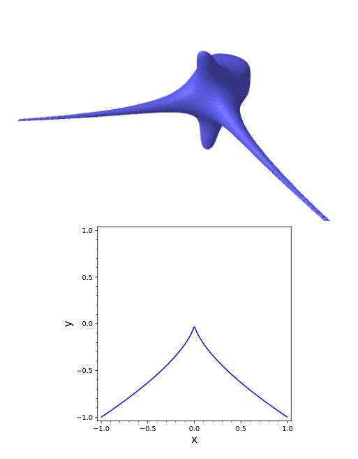
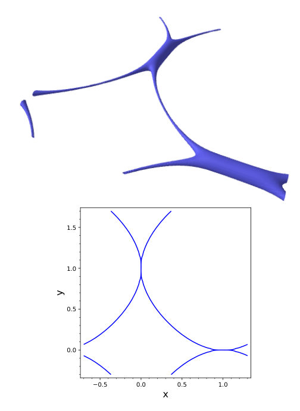
Summary. The paper introduces a new method for designing complex radio-frequency trap networks for ion-based quantum computing. By using harmonic extensions, the authors show how to create field-free paths that include non-smooth shapes like cusps and periodic lattices. This provides a new way to parameterize and design scalable quantum charge-coupled device architectures.
Why it may be interesting. This is highly relevant for AMO physicists working on ion trap QIP, as it provides a new mathematical toolkit for engineering complex, scalable trap architectures (QCCD) with controlled transport properties.
Main problem. Designing radio-frequency (RF) trap networks for the Quantum Charge-Coupled Device (QCCD) architecture that allow for field-free guide lines, specifically expanding beyond smooth, straight-line intersections to include non-smooth geometries.
Main result. Developed a constructive framework using harmonic extensions to design RF trap networks with arbitrary field-free guide lines, including cusps, cotangential contacts, and periodic lattices.
Method. Uses a harmonic extension of planar Cauchy boundary conditions (potential and normal derivative) and an 'odd subclass' of this extension to map analytic generating functions to 3D potentials.
Model / system. The system is an ion trap network for Quantum Information Processing (QIP) using a quasi-static RF field where ions are confined by a ponderomotive potential derived from the electric potential.
Key observables. RF null sets (field-free lines) and the ponderomotive potential iso-surfaces.
Important parameters / regimes. Typical dimensions in the mm scale, frequencies in the MHz range, and the quasi-static approximation regime.
Assumptions / limitations. Assumes a source-free region and focuses on the 'odd' subclass of the harmonic extension; does not yet address the physical electrode geometry required to produce these fields.
Figures summary. Figure 1 shows null lines and ponderomotive potential iso-surfaces for a cusp-line example; Figure 2 illustrates a periodic network of rounded squares with similar potential surfaces.
Paper structure. The paper introduces a framework for designing RF trap networks, presents a mathematical method for harmonic extension of Cauchy data, demonstrates specific non-smooth and periodic geometries, and discusses limitations and future directions.
We develop a constructive framework for designing radio-frequency (RF) trap networks from planar data and show that non-smooth field-free guide lines are possible in such networks. Given analytic Cauchy data on a symmetry plane, namely the potential and its normal derivative, Laplace's equation determines a local three-dimensional continuation. The odd subclass of this harmonic extension maps an arbitrary analytic generating function $P(x,y)$ to a harmonic potential whose in-plane radio-frequency null set is exactly $P(x,y)=0$. This yields explicit field-free guide networks beyond smooth straight-line intersections, including cusp guides, cotangential contacts, and periodic lattices. We further derive Fourier-space formulas for periodic extensions and present square-lattice network families with tunable local crossing angle and rounded connectivity. These results provide a compact parametrization for the design space for quantum charge-coupled device (QCCD) architectures.
Authors: Kazuki Guzman, Hiroaki Ishizuka
Type: theory · Category: strongly correlated electrons · PDF: https://arxiv.org/pdf/2605.01804v1
Analysis basis: full PDF text, analyzed in chunks
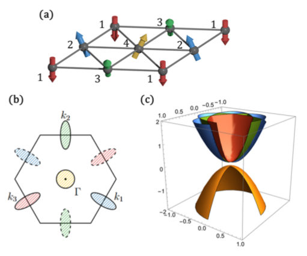
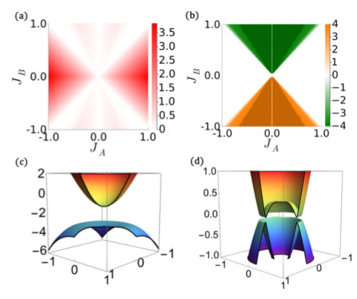
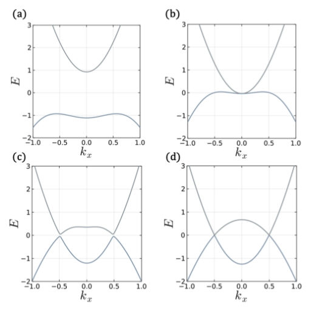
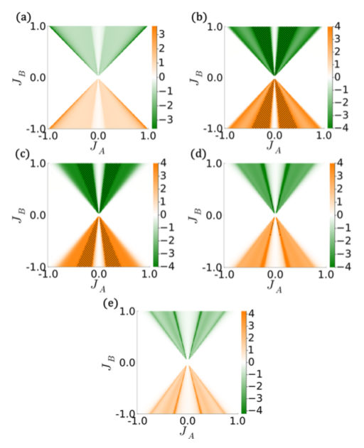
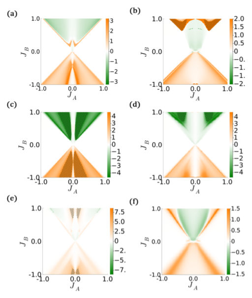
Summary. This paper investigates the emergence of topological phases like Chern insulators and Weyl semimetals in the magnetic semiconductor GdGaI. It shows that tuning the magnetic canting angle with an external field can drive metal-insulator transitions and stabilize different topological states. This identifies GdGaI as a highly tunable platform for studying spin-charge coupling and topological physics.
Why it may be interesting. not directly relevant
Main problem. The study aims to understand how non-coplanar magnetic order and spin-charge coupling reshape the electronic structure and induce topological phases in the magnetic semiconductor GdGaI.
Main result. The authors identify that the topological phase boundary is described by two degenerate double-Weyl semimetals, explaining a delta C = 4 jump in the Chern number, and demonstrate that magnetic field-induced changes in the canting angle can drive insulator-to-metal transitions.
Method. The researchers developed an effective k.p theory and a low-energy effective Hamiltonian at the Gamma point to analyze band structure, Hall conductivity, and Chern numbers.
Model / system. The system is the magnetic semiconductor GdGaI, featuring a four-sublattice triple-q magnetic order. The model couples a Ga 4p hole pocket at the Gamma point to three Gd 5d electron pockets at the M points via four exchange channels.
Key observables. Chern number (C), Hall conductivity (sigma_xy), band gap, and magnetization.
Important parameters / regimes. Exchange coupling constants (JA, JB, J0A, J0B), magnetic canting angle (theta), energy offset (Delta), and chemical potential (mu).
Assumptions / limitations. The precise size of the energy difference (Delta) remains unconfirmed; the model relies on an effective k.p theory based on prior first-principles calculations.
Figures summary. Figure 1 shows the magnetic order and band structure; Figure 2 displays band gaps and Hall conductivity in the exchange coupling plane; Figure 4 and 5 show Hall conductivity contour plots for various canting angles; Figure 7 shows band gap and Hall conductivity as a function of exchange parameters.
Paper structure. The paper introduces the magnetic system, develops an effective k.p theory, analyzes the topological phase diagram and phase transition mechanisms (including Weyl semimetals and nodal lines), and concludes with the effects of external magnetic fields on phase stability.
Non-coplanar magnetic order in low-carrier-density semiconductors provides a platform on which spin-charge coupling can reshape the electronic structure and induce nontrivial topological phases. Motivated by the recent discovery of the four-sublattice triple-$q$ order in the magnetic semiconductor GdGaI, we study an effective theory that couples a Ga $4p$ hole pocket at the $Γ$ point to three Gd $5d$ electron pockets at the $M$ points through four exchange channels. For the antiferromagnetic umbrella state with zero net magnetization, the model hosts trivial ($C = 0$) and $C = \pm 4$ Chern insulator phases separated by metallic regions; by deriving an analytical low-energy theory at the $Γ$ point, we show that the topological phase boundary is described by two degenerate double-Weyl semimetals, naturally explaining the $ΔC = 4$ jump in the Chern number. In addition, a nodal-line-like state pinned near the Fermi level emerges in the absence of the $p$-$d$ exchange coupling, which separates the $C=\pm4$ phases for $θ=\arccos(1/3)$ into two. Tuning the canting angle by an external magnetic field drives an insulator-to-metal transition out of the Chern insulator phase while leaving the trivial insulator largely intact, and stabilizes an additional $C = \pm 2$ Chern insulator phase when the uniform-magnetization exchange couplings become appreciable. These results identify GdGaI and its sister compounds as highly tunable platforms for realizing topological phases and field-induced metal-insulator transitions in clean magnetic semiconductors.
Authors: Pengcheng Hou, Daniel Cerkoney, Zhiyi Li, Tao Wang, Xiansheng Cai, Lei Wang, Gabriel Kotliar, Youjin Deng, Kun Chen
Type: theory · Category: strongly correlated electrons · PDF: https://arxiv.org/pdf/2605.02294v1
Analysis basis: full PDF text, analyzed in chunks
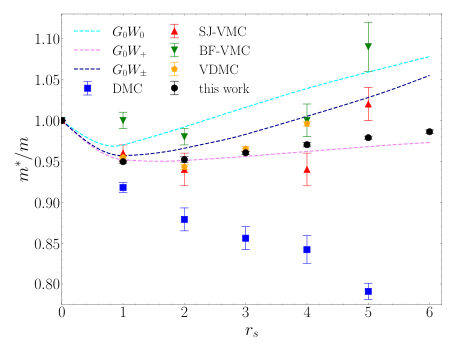
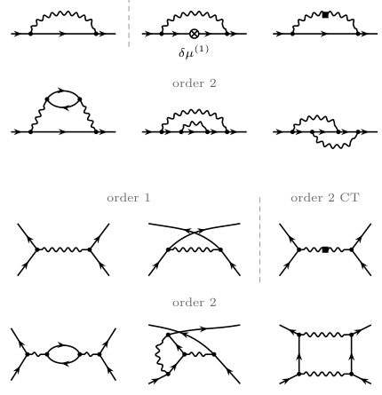
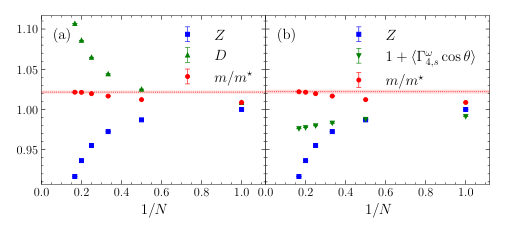
Summary. This paper provides a high-precision, first-principles calculation of the effective mass in a 3D electron gas using sixth-order renormalized perturbation theory. By using two consistent computational routes, the authors show that the effective mass stays near unity and exhibits a non-monotonic density dependence. This result resolves previous discrepancies between different many-body theoretical approaches.
Why it may be interesting. not directly relevant
Main problem. Resolving the long-standing controversy regarding the value and density dependence of the quasiparticle effective mass (m*) in the three-dimensional uniform electron gas (3D UEG).
Main result. The effective mass ratio m*/m remains close to unity throughout the metallic regime (rs <= 6) with a shallow, non-monotonic density dependence, disfavoring strong monotonic suppression.
Method. Renormalized perturbation theory using sixth-order diagrams, employing Taylor-mode automatic differentiation and Monte Carlo integration via a dual-route approach (self-energy and four-point vertex).
Model / system. A three-dimensional uniform electron gas (3D UEG) treated as a Landau Fermi liquid with long-ranged Coulomb interactions, specifically in the metallic regime (rs <= 6).
Key observables. Quasiparticle effective mass ratio (m*/m), quasiparticle residue (Z), dispersion renormalization (D), and the spin-symmetric Landau parameter (F1s).
Important parameters / regimes. Wigner-Seitz density parameter (rs), renormalized order (xi), and auxiliary screening parameter (lambda_R).
Assumptions / limitations. The expansion is carried out to the sixth renormalized order; results are extrapolated from finite temperature (T/TF = 1/40) to zero temperature.
Figures summary. Figure 1 compares the new m*/m results against various literature estimates and diagrammatic approximations, showing near-unity behavior. Table I provides a detailed numerical comparison of the two computational routes and other methods.
Paper structure. The paper introduces the controversy of effective mass, describes the renormalized perturbation theory framework and the dual-route computational approach, presents the results for the metallic regime, and concludes with a discussion on the physical origin of the observed mass behavior.
The quasiparticle effective mass $m^*$ of the three-dimensional uniform electron gas (UEG) is a fundamental Fermi-liquid parameter whose value and density dependence have remained controversial for decades. Using renormalized perturbation theory with explicit counterterms, we determine $m^*$ in the metallic regime ($r_s \le 6$) from first principles by two complementary routes -- the self-energy and the forward-scattering four-point vertex via the $p$-wave spin-symmetric Landau parameter $F_1^s$ -- that agree within uncertainties at each density through sixth renormalized order. The resulting $m^*/m$ remains close to unity throughout the metallic regime, with a shallow non-monotonic density dependence -- a minimum near $r_s\approx 1$ followed by a gentle upturn -- reflecting the interplay of exchange and dynamical screening in the self-energy, and disfavoring strong monotonic suppression. This finding supports a physical picture for the metallic UEG in which dominant charge correlations are concentrated in nearly forward scattering and generate only a weak $F_1^s$ component.
Authors: Wai-Hong Tam, Reza Safari, Hiromichi Matsuyama
Type: theory · Category: quantum information and computing · PDF: https://arxiv.org/pdf/2605.02352v1
Analysis basis: full PDF text, analyzed in chunks
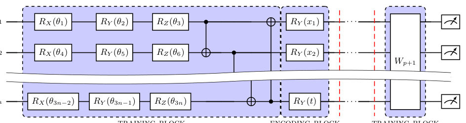
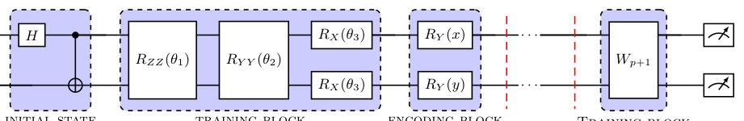
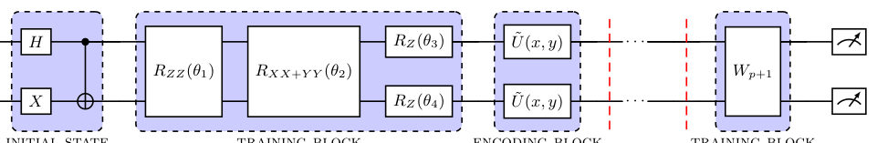
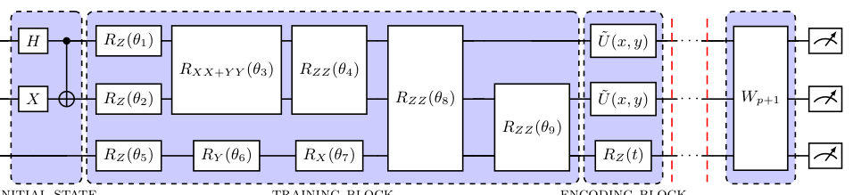
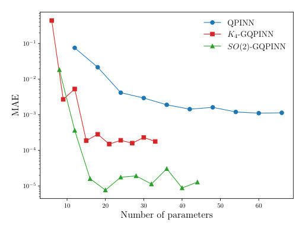
Summary. This paper introduces Geometric Quantum Physics-Informed Neural Networks (GQPINNs), which incorporate spatial symmetries directly into quantum circuit architectures. By using symmetry as an inductive bias, the method achieves much higher accuracy and requires fewer parameters than standard quantum neural networks for solving PDEs. This represents a significant step toward more efficient and physically consistent quantum-enhanced scientific machine learning.
Why it may be interesting. not directly relevant
Main problem. Improving the efficiency, accuracy, and generalization of Quantum Physics-Informed Neural Networks (QPINNs) for solving partial differential equations (PDEs) by addressing high parameter counts and optimization difficulties.
Main result. The proposed GQPINNs achieve significantly higher accuracy (up to two orders of magnitude lower MAE) and better parameter efficiency than standard QPINNs by embedding geometric symmetries directly into the quantum circuit architecture.
Method. The authors use geometric quantum machine learning principles and a twirling-based construction to embed finite-group (K4) and compact Lie-group (SO(2)) symmetries into the quantum circuit ansatz as inductive biases.
Model / system. A variational quantum machine learning framework using a data re-uploading architecture with parametrized quantum circuits (PQCs) designed to be G-invariant or G-equivariant.
Key observables. The expectation value of a chosen operator O (e.g., Pauli strings) representing the PDE solution u(x, t).
Important parameters / regimes. Number of qubits, number of layers, number of trainable parameters, and diffusion coefficient D.
Assumptions / limitations. The model assumes that the boundary and initial data are symmetry-compatible with the embedded geometric structure; focus is on the NISQ regime.
Figures summary. Figures show MAE as a function of trainable parameters, comparisons of accuracy between different symmetry-embedded models (K4, SO(2), Z2) and classical baselines, and the temporal evolution of the diffusion equation.
Paper structure. The paper introduces the GQPINN framework, details the symmetry-embedding construction via twirling, applies the method to various PDEs (Poisson, Diffusion, Acoustic Wave, Burgers), benchmarks performance against QPINN and classical PINN, and discusses scaling and future directions.
Quantum physics-informed neural networks (QPINNs) have recently emerged as a promising framework for the solution of partial differential equations (PDEs), with several studies reporting improved convergence and accuracy relative to classical physics-informed neural networks (PINNs) at reduced training cost. Motivated by these advances, we introduce geometric quantum physics-informed neural networks (GQPINNs), a symmetry-aware extension of QPINNs in which the geometric structure of the underlying PDE is incorporated directly into the quantum-circuit ansatz. Building on the framework of geometric quantum machine learning, we construct parametrized circuits that encode finite-group and compact Lie-group symmetries as inductive biases through problem-specific equivariant generator sets . Using a twirling-based construction, we derive symmetry-preserving gates that ensure that the model predictions respect the symmetries of the governing equation whenever the boundary and initial data are symmetry compatible. We benchmark GQPINNs against standard QPINNs and symmetry-adapted classical PINN baselines under matched training protocols across a representative set of linear and nonlinear PDEs. Across these benchmarks, GQPINNs achieve improved solution accuracy, as quantified by lower mean absolute error, while requiring substantially fewer trainable parameters. These results identify symmetry-aware quantum-circuit design as an effective route toward improved efficiency and generalization in quantum PDE solvers and provide a systematic framework for incorporating geometric inductive biases into quantum-enhanced scientific machine learning.
Authors: Jiarui Li, Christopher T. Parzyck, Eder G. Lomeli, Yidi Liu, Taehun Kim, Heemin Lee, Zengqing Zhuo, Eun Kyo Ko, Yaoju Tarn, Cheng-Tai Kuo, Ronny Sutarto, Chunjing Jia, Vivek Thampy, Brian Moritz, Yijun Yu, Jun-Sik Lee, Valentina Bisogni, Thomas P. Devereaux, Harold Y. Hwang, Wei-Sheng Lee
Type: both · Category: strongly correlated electrons · PDF: https://arxiv.org/pdf/2605.02891v1
Analysis basis: full PDF text, analyzed in chunks
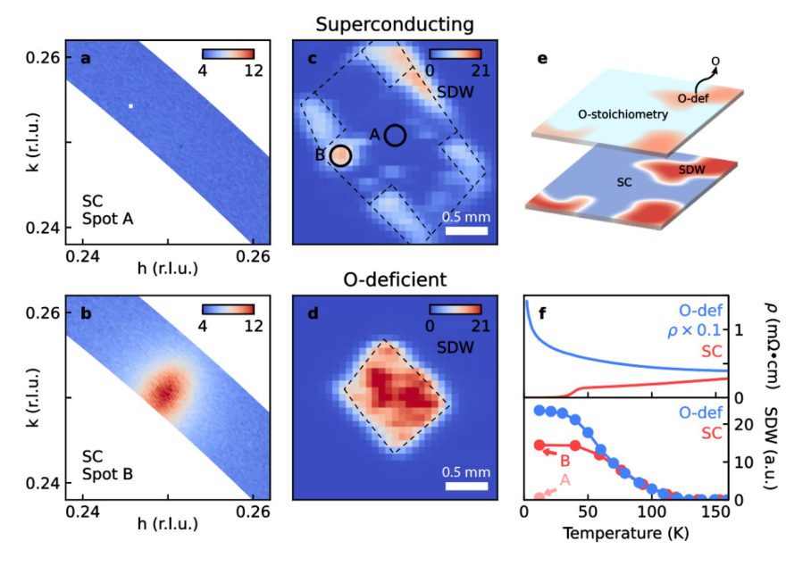
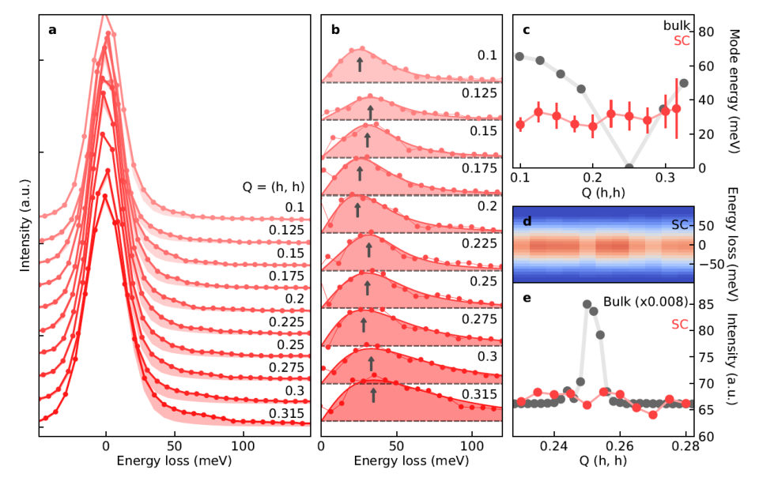
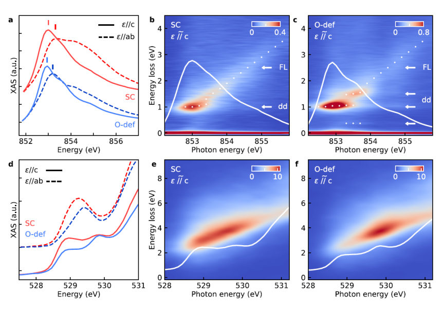
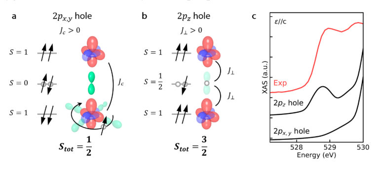
Summary. This paper demonstrates that superconductivity in bilayer nickelates is spatially separated from spin density wave order, which is driven by oxygen deficiency. It identifies a unique 'five-spin polaron' ground state where a hole at the apical oxygen mediates interlayer coupling. This provides a new microscopic perspective on the electronic structure of these high-Tc materials.
Why it may be interesting. not directly relevant
Main problem. The study aims to understand the relationship between spin density wave (SDW) order and superconductivity in bilayer nickelates and to identify the electronic ground state of the superconducting phase.
Main result. The researchers find that superconductivity and SDW order are spatially segregated, with superconductivity occurring in oxygen-stoichiometric regions. They propose that the superconducting ground state is an 'interlayer five-spin polaron' where a ligand hole resides at the apical oxygen.
Method. The study combines experimental techniques including Resonant X-ray Scattering (RXS), X-ray Absorption Spectroscopy (XAS), and Resonant Inelastic X-ray Scattering (RIXS) with theoretical modeling using DFT and an effective low-energy spin Hamiltonian.
Model / system. The physical system is La2PrNi2O7 (LPNO) bilayer nickelate thin films. The proposed model is an interlayer five-spin polaron state involving two Ni ions and a bridging apical oxygen, described by a spin Hamiltonian including charge transfer energy, Hund's exchange, and interlayer coupling.
Key observables. SDW wavevector (Q_SDW = 0.25, 0.25), Ni-L3 and O-K edge spectroscopy, Ni-L3 RIXS excitations, and oxygen-K edge XAS pre-edge spectral weight.
Important parameters / regimes. Oxygen stoichiometry, charge-transfer energy (delta), Hund's exchange (JH), interlayer exchange coupling (J_perp), and Ni-O hybridization (t_perp).
Assumptions / limitations. The model assumes Hund's coupling is large enough to lock Ni ions into an S=1 configuration and that the five-hole ground state is a four-fold degenerate quartet.
Figures summary. Figure 1 shows RXS intensity and spatial maps of SDW order; Figure 2 displays RIXS spectra and dispersion showing the absence of SDW excitations in the superconducting phase.
Paper structure. The paper introduces the problem of nickelate superconductivity, presents experimental evidence for phase segregation between SDW and SC phases via RXS, uses XAS and RIXS to probe electronic/orbital character, and concludes with a theoretical model of the five-spin polaron state.
The discovery of high-$T_c$ superconductivity in Ruddlesden-Popper nickelates has sparked substantial effort towards understanding unconventional electronic states beyond a traditional cuprate-like d^9 configurational ground state. An understanding of the interplay between magnetic ground states and multi-orbital physics is key for establishing a microscopic mechanism for superconductivity. In the bilayer nickelates, spin density wave (SDW) order is a prominent feature in the non-superconducting regime. However, its relation to superconducting pairing remains an open question. Here, we use resonant x-ray scattering to examine the existence of SDW order in superconducting bilayer nickelate thin films La$_2$PrNi$_2$O$_7$ (LPNO). Comparing superconducting and oxygen-deficient LPNO thin films, we find that superconductivity occurs in SDW-free, oxygen-stoichiometric regions, whereas oxygen-deficiency promotes SDW order, indicating phase segregation of SDW and superconductivity. Furthermore, Ni-$L_3$ and O-$K$ edge spectroscopy reveals distinct electronic structures - particularly along the $c$-axis - between the two domains. Our results identify oxygen stoichiometry as a key parameter controlling interlayer coupling and thus the electronic structure of bilayer nickelates. In concert with theory, we propose that a ligand hole primarily resides at the inter-bilayer apical oxygen, forming a robust interlayer five-spin polaron state, which serves as the ground state for superconducting bilayer nickelates.
Authors: Kunal Dutta, Anupam Mondal, Sayantika Bhowal, Subhradip Ghosh, Indra Dasgupta
Type: theory · Category: strongly correlated electrons · PDF: https://arxiv.org/pdf/2605.01271v1
Analysis basis: abstract only; PDF text extraction failed or PDF unavailable
Summary. This paper explores how the coupling of multiple degrees of freedom in the MXene Ta2CS2 enables controllable electronic properties. By using intrinsic electric polarization, one can switch orbital moments and spin splitting, suggesting potential applications in next-generation spin-orbitronic devices.
Why it may be interesting. not directly relevant
Main problem. Investigating the interplay between valley, orbital, spin, and layer degrees of freedom in the MXene Ta2CS2 and how these couplings affect electronic band structures and transport.
Main result. The study identifies valley-orbital and orbital-layer couplings that lead to valley- and layer-dependent spin splitting, which can be tuned via intrinsic electric polarization to produce switchable orbital moments and Zeeman-like spin splitting.
Method. Theoretical analysis of electronic band structures and transport phenomena (orbital and spin Hall effects) in the presence of spin-orbit interaction and electric polarization.
Model / system. The 2D MXene Ta2CS2, a noncentrosymmetric material characterized by coupled valley, spin, orbital, and layer degrees of freedom.
Key observables. Valley-dependent spin splitting, orbital and spin Hall effects, and switchable valley-dependent orbital moments.
Important parameters / regimes. Spin-orbit interaction strength and intrinsic electric polarization.
Paper structure. The paper discusses the coupling of degrees of freedom in Ta2CS2, the effect of spin-orbit interaction on band splitting, the role of electric polarization in tuning these properties, and the resulting manifestation in Hall effects.
We show that the MXene Ta$_2$CS$_2$ provides an excellent platform for hosting multiple coupled degrees of freedom, viz., valley, spin, orbital, and layer. The interplay among these degrees of freedom gives rise to a range of intriguing properties in reciprocal space, including valley-orbital and orbital-layer coupling. In the presence of spin-orbit interaction, these couplings lead to valley-dependent and layer-dependent spin splitting of the electronic bands. We further show that the intrinsic electric polarization in Ta$_2$CS$_2$ introduces an additional tuning parameter, enabling control over these coupled degrees of freedom and resulting in switchable valley-dependent orbital moments and Zeeman-like spin splitting. We demonstrate that these nontrivial orbital and spin textures manifest in the orbital and spin Hall effects, respectively. Our results establish noncentrosymmetric MXenes as a promising platform for exploring the interplay among multiple degrees of freedom, their tunability, and the resulting orbital and spin transport phenomena in these two-dimensional materials, thereby paving the way for next-generation spin-orbitronic devices.
Authors: Danyal Maheshwari, Gerhard Hellstern, Martin Zaefferer, Martin Braun, Tanja Döhler
Type: theory · Category: quantum information and computing · PDF: https://arxiv.org/pdf/2605.02656v1
Analysis basis: full PDF text, analyzed in chunks
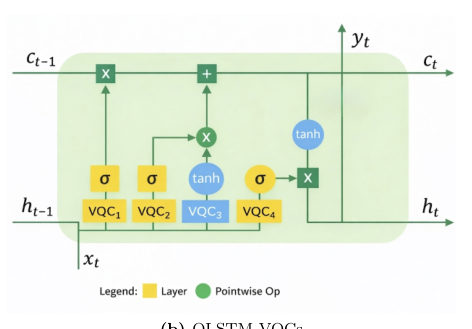

Summary. This paper compares quantum-enhanced machine learning models, specifically QLSTM and QRC, against classical LSTM and Reservoir Computing for financial time-series forecasting. It finds that while quantum models are not universal replacements for classical ones, they provide an advantage in capturing complex dependencies in multivariate, correlated data. The study highlights the potential of quantum architectures as expressive feature mappers for high-dimensional datasets.
Why it may be interesting. not directly relevant
Main problem. The study investigates whether quantum-enhanced recurrent architectures (QLSTM and QRC) can outperform classical models (LSTM and RC) in forecasting complex, non-stationary financial time series.
Main result. Quantum models show marginal improvement in univariate settings but can modestly outperform classical baselines in multivariate regimes with correlated inputs, acting as effective expressive feature mappers.
Method. The authors use amplitude encoding to embed classical features into quantum states and compare parameterized quantum circuits (VQCs) against classical counterparts using RMSE and pseudo-accuracy metrics.
Model / system. The models consist of Quantum Long Short-Term Memory (QLSTM) networks and Quantum Reservoir Computing (QRC) implemented via variational quantum circuits and fixed quantum dynamical systems.
Key observables. Expectation values of Pauli Z for QLSTM and expectation values of X, Y, and Z for QRC.
Important parameters / regimes. Number of qubits, hidden size, number of layers, and the use of univariate vs. multivariate lag structures.
Assumptions / limitations. The study assumes that matching parameter counts between quantum and classical models is a fair metric for evaluating representational capacity and focuses on realistic qubit constraints.
Figures summary. Figures illustrate structural comparisons between classical and quantum architectures, loss comparison plots for different settings, and qualitative trajectory comparisons showing the models' ability to capture temporal patterns.
Paper structure. The paper introduces the financial forecasting problem, describes the quantum and classical architectures (QLSTM, QRC, LSTM, RC), details the data encoding and preprocessing methods, presents comparative results in univariate and multivariate regimes, and concludes with limitations and future directions.
This study explores quantum and classical hybrid architectures for financial time-series fore casting, focusing on Quantum Long Short-Term Memory (QLSTM) networks and Quantum Reservoir Computing (QRC), using univariate and multivariate lag structures on real financial data. We assess how lag embeddings affect predictive accuracy and robustness. Data are en coded into quantum states via amplitude encoding, enabling efficient representation of normalized lagged observations under realistic qubit constraints. The recurrent dynamics of QLSTM and the reservoir of QRC are implemented as parameterized quantum circuits, while classical optimizers train the readout and, where applicable, variational circuit parameters. We benchmark quantum models against classical LSTM and reservoir computing using common error like metrics. Our results show that, with suitable lag selection and amplitude encoding, quantum-enhanced archi tectures match classical baselines in univariate settings and can modestly outperform them in multivariate regimes with correlated inputs, where expressive encodings are most beneficial.
Authors: Kiyoharu Kawana, Kyosuke Adachi
Type: theory · Category: statistical mechanics · PDF: https://arxiv.org/pdf/2605.01261v1
Analysis basis: full PDF text, analyzed in chunks
Summary. This paper introduces a systematic loop expansion method for polymer field theory, treating inverse density as a formal expansion parameter similar to the Planck constant. The new RPA+ approximation provides much more accurate predictions for the density of the dilute phase in polymer solutions compared to standard RPA. This provides a new theoretical framework for studying phase separation in complex fluids and biomolecular condensates.
Why it may be interesting. not directly relevant
Main problem. The Random Phase Approximation (RPA) lacks quantitative accuracy for predicting binodal curves in polymer solutions, especially in the low-density regime.
Main result. The authors develop a systematic loop expansion in polymer field theory where the inverse density acts as the expansion parameter, finding that the leading-order correction (RPA+) significantly improves predictions for dilute-phase coexistence.
Method. A field-theoretic loop expansion in powers of inverse polymer density (rho^-1), validated against molecular dynamics simulations using the HOOMD-blue package.
Model / system. A homopolymer system undergoing liquid-liquid phase separation, modeled using a field-theoretic approach with Gaussian chains and a two-body potential consisting of short-range repulsion and attraction.
Key observables. Binodal curves (coexistence densities), Helmholtz free energy, chemical potential, pressure, and isothermal compressibility.
Important parameters / regimes. Polymer density (rho), degree of polymerization (N), inverse temperature (beta), and interaction potential parameters (u1, u2).
Assumptions / limitations. The expansion parameter is identified as rho^-1 (analogous to h-bar); polymers are modeled as Gaussian chains; the two-body potential Fourier mode v(k) is positive.
Figures summary. Figure 1 shows connected correlation functions; Figure 2 and 3 illustrate Feynman diagrams for LO and NLO corrections; Figure 4 shows MD simulation snapshots and density profiles; Figure 5 compares theoretical (RPA/RPA+) and simulated binodal curves.
Paper structure. The paper introduces the problem of RPA inaccuracy, establishes the formal correspondence between polymer loop expansion and quantum field theory, derives the LO (RPA+) and NLO (RPA++) corrections, validates the theory using MD simulations, and discusses limitations regarding critical fluctuations.
Liquid-liquid phase separation underlies phenomena ranging from protein condensate formation to the phase coexistence of synthetic polymers. Although the random phase approximation (RPA) is widely used to predict such phase behavior, its quantitative accuracy for binodals of polymer solutions, particularly outside the high-density regime, remains incompletely characterized. Here, we develop a field theoretic loop expansion in homopolymer systems by identifying the inverse polymer density $ρ^{-1}$ as the Planck constant $\hbar$ in quantum field theory. We calculate the leading-order and next-to-leading-order corrections to the RPA free energy, denoted as RPA+ and RPA++, respectively. Testing the binodal predicted by the RPA+ against molecular dynamics simulations of bead-spring chains with Gaussian pair interactions, we find that the RPA+ qualitatively improves the dilute-phase coexistence density over the RPA, while the critical point error remains comparable to that of the RPA. Our results establish the loop expansion as a systematic route for refining the RPA-based binodal predictions for polymer phase separation.
Authors: Shubhankar Paul, Giordano Mattoni, Amitava Ghosh, Pooja Kesarwani, Dipak Sahu, Monika Ahlawat, Ashok P, Amit Verma, Vishal Govind Rao, Chanchal Sow
Type: experiment · Category: strongly correlated electrons · PDF: https://arxiv.org/pdf/2605.01314v1
Analysis basis: full PDF text, analyzed in chunks
Summary. This paper investigates how the microstructure of VO2 thin films dictates the nature of the metal-insulator transition. By comparing large-grain and small-grain samples, the authors demonstrate that grain size influences domain nucleation and the symmetry of thermal hysteresis. The study provides a quantitative link between growth conditions and the macroscopic hysteretic response.
Why it may be interesting. not directly relevant
Main problem. Understanding the microscopic origin of domain nucleation, distribution, and hysteresis during the metal-insulator transition (MIT) in VO2 thin films.
Main result. The study finds that large-grain VO2 exhibits a symmetric, continuous transition, whereas small-grain VO2 shows an asymmetric transition with multiple conduction channels driven by supercooled metallic domains and inter-grain interactions.
Method. A multi-probe approach combining electrical resistivity measurements, First-Order Reversal Curve (FORC) analysis, and infrared (IR) thermal imaging.
Model / system. VO2 thin films grown via two different regimes: P-VO2 (large grains, ~40 nm, via Pulsed Laser Deposition) and S-VO2 (small grains, ~20 nm, via DC magnetron sputtering) on c-plane Al2O3 substrates.
Key observables. Electrical resistivity, thermal hysteresis width (delta T), FORC distribution (peaks and energy barriers), and Insulating Fill Fraction (IFF).
Important parameters / regimes. Grain size (20 nm vs 40 nm), transition temperature (T_MIT), and thermal hysteresis width (9 K vs 16 K).
Assumptions / limitations. Emissivity is assumed to be constant within a given sample and phase for IR imaging analysis.
Figures summary. Figure 1 shows resistivity vs temperature and temperature derivatives; Figure 2 presents FORC curves and 2D contour plots of distribution; Figure 4 includes 3D histograms of IR intensities.
Paper structure. The paper introduces the problem of domain dynamics in VO2, describes the two growth regimes (P-VO2 and S-VO2), presents transport and structural characterization, details the FORC and IR imaging analysis, and concludes by correlating microstructure with phase transition symmetry and hysteresis.
Electronic and structural degrees of freedom are often intimately coupled in strongly correlated systems, which result in intriguing macroscopic and microscopic phenomena. Using the well-studied material VO$_2$ as a prototype, here we explore the domain distribution across the metal-insulator transition (MIT). We use macroscopic as well as microscopic techniques, such as first-order reversal curve (FORC) and infrared imaging, to probe the domain distributions across the MIT. This study compares MIT in thin films of VO$_2$ with different grain sizes grown by pulsed laser deposition and dc sputtering. We explore the relation between the nature of the FORC distribution and the corresponding thermal hysteresis due to interactions between the supercooled metallic domains and surrounding insulating matrix. Our multi-probe study with quantitative analysis provides a correlation between the growth, domain interaction, and domain nucleation process in MIT.
Authors: Maria Gragera Garces
Type: theory · Category: quantum information and computing · PDF: https://arxiv.org/pdf/2605.01974v1
Analysis basis: full PDF text, analyzed in chunks
Summary. This paper demonstrates that using random quantum circuits for benchmarking DQC compilers leads to misleading conclusions about the effectiveness of partitioning algorithms. It shows that structured, generated circuits are a much more reliable proxy for real-world quantum workloads.
Why it may be interesting. not directly relevant
Main problem. Investigating whether using random quantum circuits as benchmarks provides a faithful assessment of hypergraph partitioning performance in Distributed Quantum Computing (DQC) compilers.
Main result. Random circuits significantly distort partitioning evaluations by inflating cut costs, altering scaling trends, and changing the relative ranking of partitioning strategies, whereas structured generated circuits (QGen) closely approximate real workloads.
Method. The study evaluates various partitioning strategies (e.g., KaHyPar, Zoltan PHG, FM, StochG) across three circuit ensembles: Real, Random, and Generated (QGen), using statistical tools like Spearman rank correlation and Mann-Whitney U tests.
Model / system. A Distributed Quantum Computing (DQC) model where a large workload is distributed across a network of k smaller, fully connected Quantum Processing Units (QPUs), represented as hypergraphs where qubits are vertices and multi-qubit gates are hyperedges.
Key observables. Cut cost (number of hyperedges spanning different partitions), scaling trends (relative to QPU count and circuit size), and strategy ranking (relative performance order of algorithms).
Important parameters / regimes. Number of partitions (k from 2 to 10), circuit size (n up to 134 qubits), number of multi-qubit gates (up to 20,000), and imbalance tolerance (5%).
Assumptions / limitations. The inter-QPU network is assumed to be fully connected, and the study assumes that qubit interaction topology is the primary driver of partitioning performance.
Figures summary. Figure 1 shows total cut costs across partitioners; Figure 2 shows performance variance heatmaps; Figure 3 shows normalized cut cost vs. number of QPUs; Figure 4 shows normalized cut cost; Figure 5 uses violin plots to illustrate the distribution of total cut costs.
Paper structure. The paper introduces the DQC partitioning problem, defines the three circuit ensembles (Real, Random, Generated), details the partitioning algorithms and evaluation metrics, presents comparative results regarding cost and ranking stability, and concludes with implications for compiler design and future work.
Hypergraph partitioning is a central component of distributed quantum computing (DQC) compilers. However, due to the limited size of available quantum benchmark suites, many partitioning studies rely on random quantum circuits as evaluation workloads. In this work, we investigate whether such benchmarking practices provide a faithful assessment of partitioner performance. We evaluate a diverse set of state-of-the-art hypergraph partitioning strategies across three circuit origins: real algorithmic circuits, structured generated circuits, and fully random circuits. Our results show that random circuits significantly distort partitioning evaluation. They inflate cut costs, alter scaling trends across QPU counts and circuit sizes, and change the relative ranking of partitioning strategies. In contrast, structured generated circuits exhibit substantially lower distortion, more closely approximating real workload behaviour in cost, scaling, and strategy rankings. These findings demonstrate that benchmark selection directly influences methodological conclusions in DQC research and that random circuits may provide misleading guidance for compiler design.
← Index · ← Previous · Next →